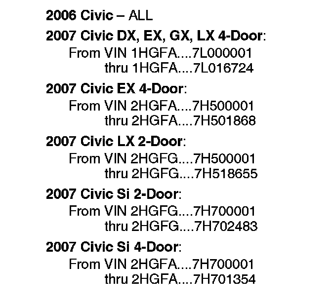
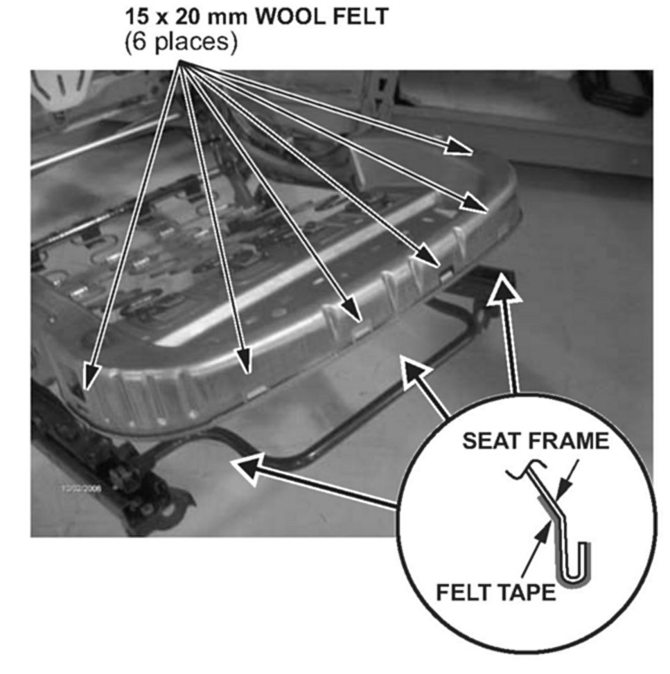

Interior - Front Seat Cushion Cover is Loose
07-004January 25, 2007
Applies To:
See VEHICLES AFFECTED
Front Seat Cushion Cover Is Loose
PROBLEM
The seat cushion cover is loose.
PROBABLE CAUSE
Imperfections in the seat frame reduce the clamping force of the seat cushion cover clips.

VEHICLES AFFECTED
CORRECTIVE ACTION
Install wool felt on the seat frame in the clip attachment areas.
REQUIRED MATERIALS
Wool Felt (11): P/N 06993-SA5-000, H/C 2086676
(One roll repairs about 55 seats.)
WARRANTY CLAIM INFORMATION
In warranty:
The normal warranty applies.
Operation Number: Driver's seat: 8510A1
Front passenger's seat: 8520A3
Flat Rate Time: 0.5 hour per seat
Failed Part: Driver's seat:
P/N 81531-SVA-A11ZB
H/C 8071649
Front passenger's seat:
P/N 81131-SVA-A11ZB
H/C 8070534
Defect Code: 07701
Symptom Code: 06101
Template ID: 07-004A Driver's seat
07-004B Front passenger's seat
07-004C Both seats
Skill Level: Repair Technician
Out of warranty:
Any repair performed after warranty expiration may be eligible for goodwill consideration by the District Parts and Service Manager or your Zone Office. You must request consideration, and get a decision, before starting work.
REPAIR PROCEDURE
NOTE:
Wear cut-resistant gloves when working with the seat frame.
1. Remove the seat:
^ Refer to page 20-162 of the 2006-2007 Civic Service Manual or
^ Online, enter keyword SEAT, and select Front Seat Removal/Installation from the list.
2. Set the seat on a workbench, then remove the seat cushion with the cover still attached:
^ Refer to page 20-177 of the service manual, or
^ Online, enter keyword SEAT, and select Front Seat Cushion Cover Replacement from the list.
3. Cut six 15 mm x 20 mm pieces of felt.

4. Apply the felt to the six locations shown.
5. Reinstall the seat cushion with the cover onto the seat frame.
6. Attach the clips to the seat frame, and make sure they are securely attached.
7. Reinstall all parts in the reverse order of removal.
8. If needed, repeat steps 1 through 7 for the other seat.

Disclaimer